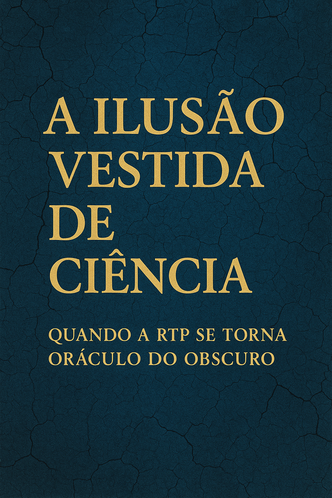

Publicado em 2025-05-16 07:57:20
Por Francisco Gonçalves
Recentemente, a RTP — televisão pública e supostamente baluarte do pensamento crítico — decidiu brindar-nos com uma série documental que aborda temas como espiritualidade, parapsicologia e o seu “lugar na ciência”. A premissa, embrulhada num tom solene e visualmente apelativo, é a de que “a ciência deve explorar mais profundamente estes domínios”. E é aqui, caro leitor, que começa a verdadeira assombração: a da desonestidade intelectual disfarçada de investigação televisiva.
Vivemos numa era onde o ruído se sobrepõe à razão. Onde os algoritmos e os talk-shows são mais influentes do que laboratórios e bibliotecas. Mas quando essa distorção do real passa a ser patrocinada pelo serviço público de televisão, a questão deixa de ser apenas de gosto — é uma questão de responsabilidade social e epistémica.
A ciência, essa palavra tantas vezes abusada, não é um confessionário universal. Não é obrigada a validar tudo aquilo que gostávamos que fosse verdade. A ciência existe precisamente para testar, desmontar falsificações, pôr à prova, e não para confortar. E foi esse método rigoroso que, ao longo do século XX, submeteu inúmeras alegações parapsicológicas a análises estatísticas e testes laboratoriais. O resultado? Em 99% dos casos: charlatanismo, viés de confirmação ou fraude descarada.
Desde Uri Geller a alegar que entorta colheres com a mente (mas que não funcionava sob vigilância científica), até médiuns desmascarados a usarem microfones escondidos e truques de palco — a história da parapsicologia é, com raras exceções, a história da ilusão.
Ao apresentar estas temáticas como se fossem apenas “campos por explorar”, a RTP está a embelezar a ignorância. Está a criar uma narrativa onde não saber ainda é saber potencial, e onde o impossível é apenas uma questão de fé mal medida. Isso pode parecer inofensivo para o espectador informado. Mas para os milhões de portugueses expostos a este conteúdo — muitos dos quais sem formação crítica — é uma armadilha mental.
Hoje, mais do que nunca, precisamos de cidadãos que questionem, que desconfiem, que analisem. Não de cidadãos que esperem que a telepatia resolva o sistema nacional de saúde ou que os chakras substituam a justiça social.
Ao misturar misticismo com ciência, a RTP faz o jogo dos que há décadas lutam para destruir a fronteira entre conhecimento e crença. Não é apenas ridículo — é perigoso. Porque ajuda a cimentar uma cultura onde tudo é relativo, onde todas as “verdades” são válidas, e onde os factos se tornam opcionalmente espirituais.
E quando tudo vale o mesmo, a verdade morre. E a democracia com ela.
Nota final:
Aos que dizem que “a ciência ainda não sabe tudo”, eu respondo: a ciência sabe quando não sabe — e é essa a sua grandeza. Já a parapsicologia, disfarçada de documentário, não sabe o que não sabe — e insiste em fingir que sabe tudo.